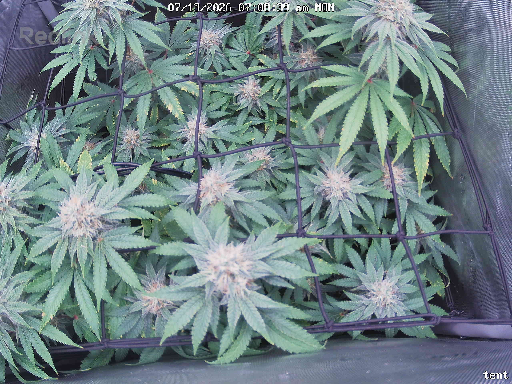
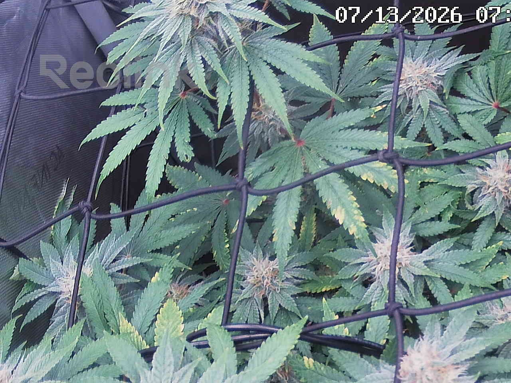
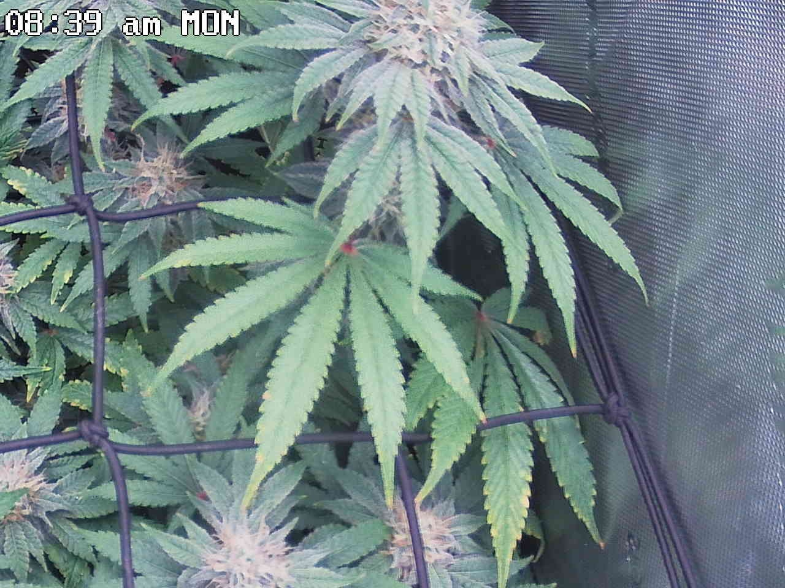
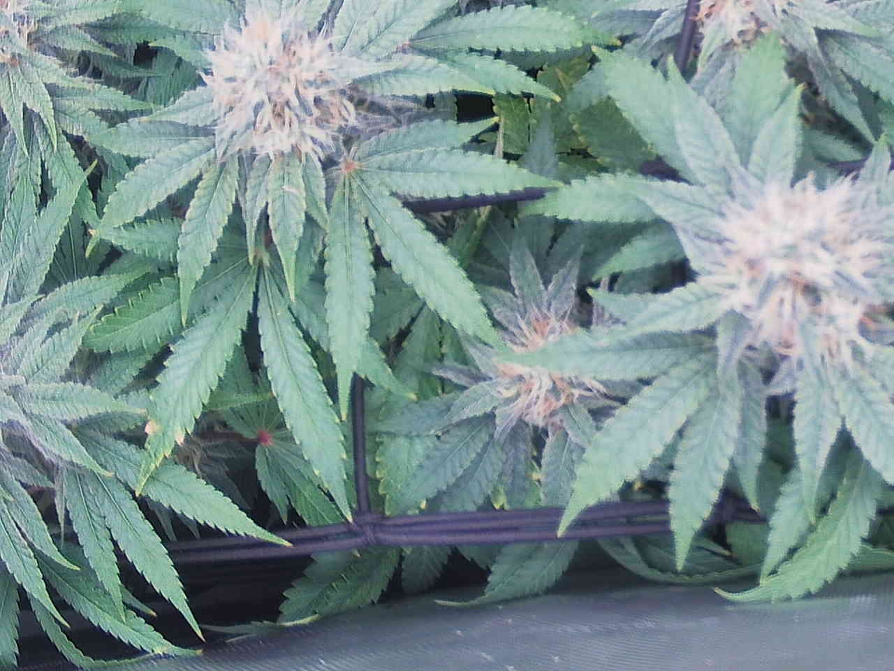
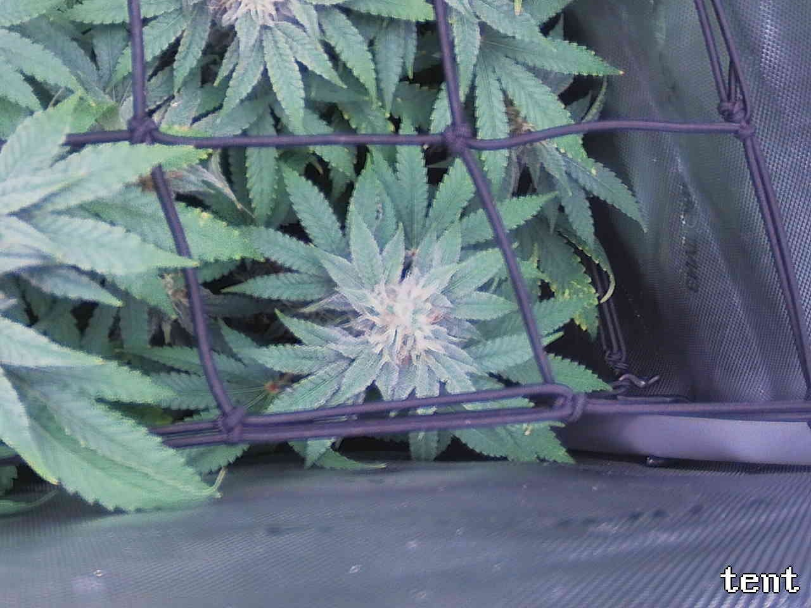
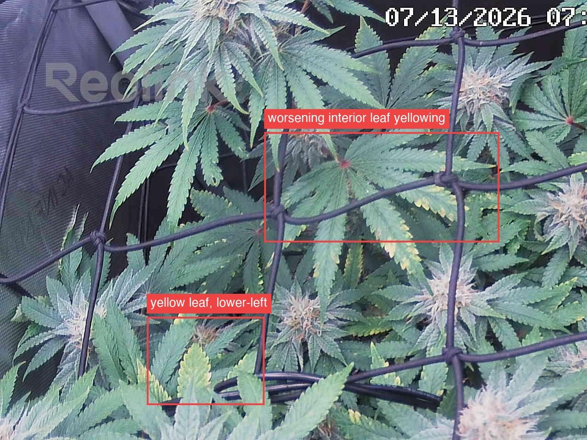

Per-quadrant analysis — the canopy shot was split into a 2x2 grid and each region compared against the previous day.
Overall, the plant is progressing normally through bulking-stage flower (~day 40) in three of four quadrants — colas are swelling with increasing trichome/pistil development, canopy structure is unchanged day-over-day, and previously-logged items (benign anthocyanin coloration, stable tip-burn flecks, leaf speckling) remain flat, non-progressing, and show no pest or mold signs. The one substantive concern is the top-left quadrant (ATTENTION): interior/lower fan-leaf yellowing that was already being watched has visibly worsened in 24h — the mottled yellow patch expanded in size and gained an adjacent affected leaflet, and a separate lower-left leaf went from tip-yellowing to roughly half-yellow. This is confined to shaded interior/older foliage with no chlorosis, spotting, or pest signs on new growth, and is occurring somewhat early for normal late-flower senescence (day 40/~wk5.7, short of the wk7+ threshold), so it is the trend to act on: reassess nitrogen/potassium status and watering consistency rather than assuming benign fade, and re-photograph this same interior zone tomorrow to confirm whether the progression rate is accelerating.
Bud sites (whole plant, estimate): 14-22

Bud sites: 6-9
Bud sites: 3-4
Bud sites: 2-4